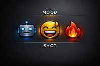

Inquisitor Labs is always asking “what comes next” - especially in the development of AI and AI systems. We strive to make the systems we have today more capable, and we are actively developing the next generation of systems architecture and components that will supersede many of those available today.
We design revolutionary systems great and small, at the architectural level. We challenge anyone to build them.
Usually they consist of two papers- an Architectural Specification and a Technical Specification. We define the behaviour, the structure, and the expectations of a system - and leave the implementation to anyone willing to take it on. If you can build it, build it!
Inquisitor Labs works at the system architecture level. We define how a system should behave, not how to code it. That said, a sufficiently competent developer or development team should be able to code a working system from our designs. Our concepts sit above any specific operating system or framework, so they can be adopted, adapted, and implemented in many runtime environments.
Here you will find Open Use and Open Build resources developed exclusively by us. We believe these resources are unique at the time of publication and offer significant development and commercial opportunities, as well as less tangible benefits to those who can successfully integrate them into wider systems.
We are always open to collaboration. Architectural discussion and joint commercial ventures are welcome, but we do not provide support for system specific issues such as coding, documentation, troubleshooting or tech support. And especially not on an ad-hoc basis.
To understand how to use our specifications, read our General Specification Usage Guide.
Open Use and Open Build describe a publishing model where architectural and technical specifications are made available for anyone to study, develop, and build upon. These specifications are system agnostic and do not depend on any particular model, operating system, coding language, or runtime environment. Documents that include their own licence operate under those terms; where a document is published without an explicit licence, the Apache 2.0 licence applies by default. Apache 2.0 permits free use, modification, distribution, and commercial implementation, requires attribution and preservation of notices, includes an explicit patent licence, and contains a patent retaliation clause to prevent misuse.

Imagine if you could adjust how a local LLM behaves with the same simplicity as moving a slider control. Where interaction style is not a hidden internal state, but a user defined parameter - explicit, transparent, and reversible.
MOOD SHOT provides deterministic, user controlled persona modulation for local (and potentially distributed) LLMs. It uses operator defined mappings and a minimal slider interface to expose behaviour shaping as a clear, inspectable mechanism. Instead of guessing how the model will respond, you set the behaviour directly. Instead of a small fixed selection you get a range.
Mood Shot Architecture Specification (PDF)
Mood Shot Technical Specification (PDF)
Home · Insights · Methodology · Research · Training · Open Use · Collaborations · Glossary